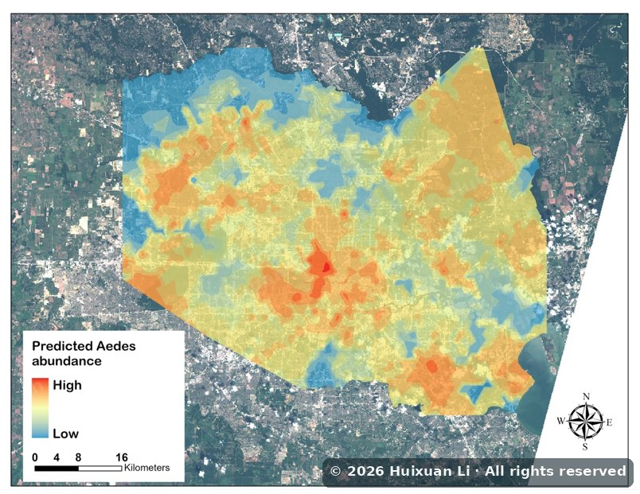
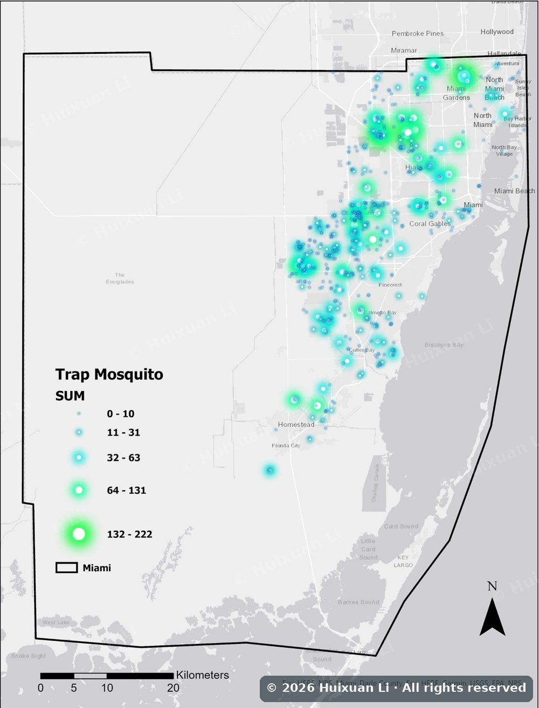

Mosquito-borne disease and climate
On an NIH NIAID R01, I lead the geospatial and remote-sensing work on Aedes and Culex populations in Houston and Miami. I predict where these mosquitoes thrive by combining Landsat and Sentinel spectral indices, gridded climate (PRISM, GRIDMET), land cover and trap counts in Random Forest, XGBoost and GAM models.
In Mexico, a 40-year analysis showed that dengue outbreaks grow because the virus reaches new places, not because transmission intensifies where it already circulates. In South Carolina I am building an emerging hot-spot and GWR analysis of nearly 30 years of state Culex surveillance.
- Random Forest
- XGBoost
- Bayesian spatio-temporal
- GAM
- Emerging hot spots
- Computer vision
Li et al. (2026). Geographic expansion, not viral intensification, leads to human dengue outbreaks in Mexico. Frontiers in Public Health.
Li, H., et al. (2026). The prediction of Aedes mosquito abundance using remote sensing and machine learning in Harris County, Texas. Scientific Reports. Read ↗

